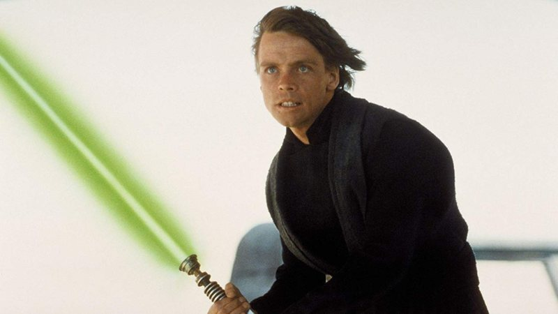
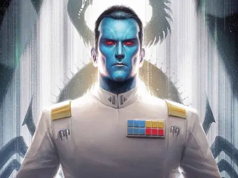
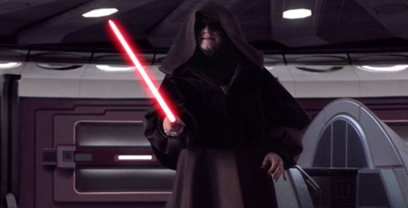
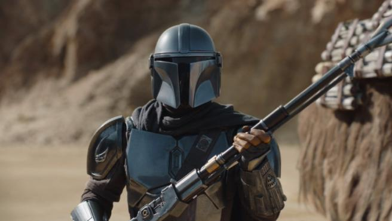
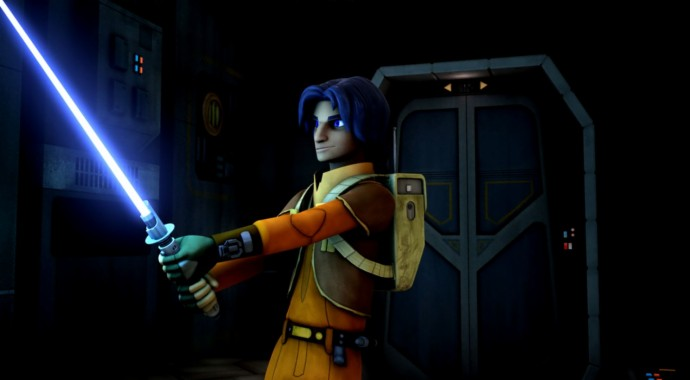
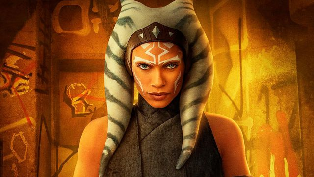
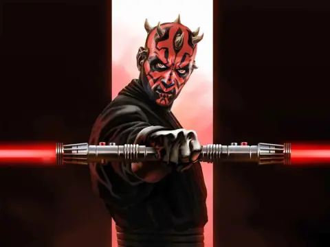

Luke Skywalker fue un humano sensible a la Fuerza y un Maestro Jedi quien, junto a su hermana gemela, la
Princesa Leia Organa, luchó en contra del gobierno del Imperio Galáctico durante la Guerra Civil
Galáctica. Hijo del Caballero Jedi Anakin Skywalker y de la Senadora Padmé Amidala de Naboo.
 La fuerza es muy intensa en mi familia. Mi padre la tiene, yo la tengo y… Mi hermana la tiene
2 Se busca: Almirante Thrawn
Mitth'raw'nuruodo, más comúnmente conocido como Thrawn, fue un oficial chiss y gran almirante de la
Armada Imperial durante el reinado del Imperio Galáctico. Thrawn, un oficial Imperial alienígena de
llamativa piel azul, ojos rojos y rostro angulado, era bien conocido como un estratega brillante y
despiadado. Creía que para lograr la victoria en la guerra, uno debía conocer a su enemigo. Como tal, se
dedicó a comprender la filosofía, el arte y la cultura de sus oponentes, que incluían a los twi'leks de
Ryloth y los guerreros de Mandalore.
 Hay cosas en el universo que son simple y llanamente malvadas. Un guerrero no busca comprenderlas ni
comprometerse con ellas. Tan sólo busca eliminarlas
3 Se busca: Darth Sidious
Darth Sidious, un hombre humano sensible a la Fuerza, fue un Señor Oscuro de los Sith y Emperador
Galáctico que gobernó la galaxia desde la caída de la República Galáctica hasta la fragmentación del
Imperio Galáctico. Ascendiendo al poder en el Senado Galáctico como el senador Sheev Palpatine, fue
elegido para el cargo de Canciller Supremo y, durante las Guerras Clon, acumuló poderes de guerra en
nombre de garantizar la seguridad.
 Todo se desarrolla tal como tenía previsto
4 Se busca: Din Djarin
Din Djarin, comúnmente conocido como «el Mandaloriano» o «Mando» para abreviar, fue un hombre humano
mandaloriano que trabajó como cazarrecompensas durante la Era de la Nueva República. Con su armadura
mandaloriana y distintivo casco de beskar, Djarin estaba bien equipado y era enigmático—un extranjero
cuyo pasado está rodeado de misterio para los demás.
 Soy un mandaloriano. Las armas son parte de mi religión.
5 Se busca: Ezra Bridger
Ezra Bridger fue un Padawan Jedi humano que se convirtió en un luchador rebelde y un líder
revolucionario
durante la rebelión inicial contra el Imperio Galáctico. Nació de Ephraim y Mira Bridger, cuyas críticas
públicas al Imperio provocaron su encarcelación, dejando a Bridger como huérfano en Lothal cuando era un
niño. Ezra se unió a la tripulación rebelde del Espíritu en el 5 ABY y se convirtió en el aprendiz Jedi
de
Kanan Jarrus.
 Cómo elegimos luchar es tan importante como el motivo por el que luchamos
6 Se busca: Ahsoka Tano
Ahsoka Tano, apodada por su Maestro como «Sabionda», «Chulita» o «Mocosa», fue una Padawan Jedi togruta
que, tras las Guerras Clon, ayudó a establecer una red de células rebeldes para combatir al Imperio
Galáctico.
 Es el deber de todos los ciudadanos poner a prueba a sus líderes, hacer que sigan siendo honestos, y
hacer que asuman su responsabilidad si no lo son.
7 Se busca: Darth Maul
Maul fue un zabrak dathomiriano sensible a la Fuerza y un guerrero del lado oscuro que sirvió como el
aprendiz Señor Oscuro de los Sith Darth Maul durante los últimos años de la República Galáctica y reinó
como señor del crimen durante el dominio del Imperio Galáctico.
 Fui el aprendiz del ser más poderoso de toda la galaxia. Mi destino era ser... mucho más.